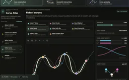

Curve Atlas
Put Bézier curves, classical splines, local Yuksel interpolation and constrained curve families beside one another to see how they work and where they differ in action. Then follow 2D/2D and 2D/1D intersections—with each formula exposed—from isolated curve geometry into the same dimensional-reduction ideas used by Photon Primitives.
Explore connections
Open the application, then follow what changes
An atlas of how curves are constructed, constrained and intersected. Compare classical splines with local Yuksel interpolation, inspect when exact polynomial constraints produce poor shape, and follow predictor–corrector steps along intersections of implicit surfaces.
-
01
Choose a construction
Compare bases, interpolation rules and rational weights on shared controls.
-
02
Impose constraints
Specify positions and derivatives; inspect residuals and unwanted excursions.
-
03
Read the geometry
Reveal curvature, moving frames and the extent of local influence.
-
04
Trace intersections
Follow tangent predictions, corrective solves and discovered branches.
Curve construction: from representation to algorithm
Curve Atlas brings curves and geometric intersections in computer graphics into one inspectable workbench. Curve construction covers bases, interpolation rules and custom constraints. Geometric intersections follows rays and curves into primitive equations, analytic special cases and numerical branch tracing. Curve geometry connects shape to moving frames, offsets, bending and surface paths. The full-width subject bar selects one area; its sidebar contains only that area's studies.
For a rational curve, weighted basis contributions form a numerator and a scalar denominator; dividing them projects the result back into the plane. The construction view makes the same idea geometric. Control points become homogeneous triples (wx, wy, w), interpolation proceeds in that space, and each level is projected for display. Rational Bézier curves use de Casteljau construction; the NURBS view uses de Boor levels over the active knot span.
The B-spline evaluator builds clamped knots and evaluates the basis recursively. Degree is bounded by the available control points, repeated-knot denominators are handled explicitly, and positive weights are clamped away from zero. These are concrete implementation choices that keep interactive edits within the supported domain. They are also boundaries of the demo: this view is not an unrestricted knot-vector editor or a negative-weight projective-curve solver.
Custom Curve Builder: exact conditions can still give poor shape
Specify positions and arbitrary parameter derivatives, then inspect the polynomial that satisfies them. The wide-detour example meets eleven position conditions with a largest numerical residual of about 2.6e-7, yet travels roughly 230 units outside their bounding box. The fitted viewport, position bounds and excursion marker make the distinction visible: solving the conditions does not constrain every part of the curve. This motivates comparing global polynomial fitting with local constructions such as Yuksel curves.
The builder exposes degree and derivative orders through twelve, numerical target coordinates, and draggable scaled derivative handles. Column-scaled, pivoted QR solves the linear constraints and reports rank, remaining scalar freedom, and residuals. An inconsistent system stays visibly inconsistent; a derivative beyond the polynomial's degree cannot acquire meaning through a larger penalty weight.
Scalar curvature is a different, nonlinear condition. Its refinement moves only within the null space of the linear system, preserving the position and derivative predictions already established. Zero-speed curvature is marked undefined. Underdetermined inputs select a particular solution; they do not imply a minimum-energy curve or a globally optimal curvature fit.
Compare geometry without changing every variable
The same control polygon can be viewed with Bézier or B-spline bases and with rational weighting enabled or disabled. Overlays make the difference attributable to the representation instead of a different example. Weight plots and basis bars connect local influence to the resulting shape, while the animated parameter makes it clear that equal increments of the curve parameter need not cover equal distances.
Speed, curvature, and length readouts are computed from sampled points. They help locate shape changes and difficult regions, but they remain numerical estimates. The workbench caches curve geometry separately from the animated parameter. Moving the construction marker reuses that geometry until the control points or curve representation change.
Analysis groups Yuksel circular, elliptical, hybrid and Bezier curves beside two selectable comparison constructions. Shared points, edits and plot scales expose differences in shape, curvature and local influence. Interpolation points and approximation controls are explicitly distinguished: Bezier and B-spline curves need not pass through interior controls. Join diagnostics are tied to actual joins, while parameter speed remains separate from geometric smoothness. The Yuksel workbench exposes the local three-point functions and blending behind these results.
Intersect: watch a predictor and corrector work
For implicit surfaces f(p) = 0 and g(p) = 0, the cross product of their gradients gives a tangent to a regular intersection. The tracer predicts a new point by stepping along that tangent, then corrects the point back onto both surfaces. An oblique cylinder intersecting a sphere is a useful demonstration: changing the cylinder orientation changes the space curve, while the tracing algorithm stays the same.
The correction has two constraints in three coordinates. It restricts the displacement to the span of the surface gradients, producing a two-by-two Gram system. Gradient normalization makes the degeneracy decision independent of an arbitrary rescaling of either implicit equation. Near-parallel gradients reveal the same geometric difficulty in both the correction system and the tangent construction.
Select a step to see its origin, predicted point, corrected point, and before/after residuals. These markers come from the actual trace record. Step size responds to corrector effort; failed corrections retry from the last accepted point with a smaller step. Each accepted sample records the step actually used and its correction count. Open branches retain both traversal directions in their length and stopping report; the smooth tube interpolates the accepted samples.
Treat branch discovery as its own problem
Following one regular branch does not discover every intersection component. The atlas starts Newton corrections from a coarse three-dimensional grid, clusters the resulting seeds, and avoids seeds near already traced samples. Open branches are walked in both directions. This makes the search useful for exploration while keeping its dependence on bounds, seed density, and clustering visible.
The supporting geometry stays close to the curve: transported frames stabilize cross-sections; PH curves support rational offsets; prescribed curvature and torsion generate shapes; rolling mechanisms produce traces; geodesics constrain paths to surfaces; rulings turn moving lines into surfaces. Geometry starts with Frames & curvature. Analysis also connects local subdivision masks to successive refinement levels, showing which rules retain the input points and which move them.
- Keep a control polygon fixed and compare rational versus unweighted curves, then change one weight.
- Load Exact samples, wide detour in the builder, fit the whole curve, and compare residuals with the amber excursion marker.
- Move one point in Analysis and compare the three curves, one-sided curvature and affected spans.
- Tilt the cylinder in Numerical Surface Intersections and inspect the traced branches and stopping diagnostics.

Recorded examples · 1Interface and technical resultThe recorded view keeps the result beside the controls and intermediate explanation.＋
More recorded views · 2
Current scope
- Polynomial degree and derivative order are bounded at twelve. Closely spaced constraints and high degree can be ill-conditioned; nonlinear curvature refinement is local.
- Intersection discovery uses bounded grid seeds and distance-based clustering. It is not a certified enumeration of every connected component. Curve × Primitive uses sampled sign-change bracketing and bisection; tangencies and closely spaced roots can escape that scan.
- Parallel gradients, failed corrections, and trace limits are explicit stopping conditions. Loop closure uses a proximity heuristic rather than a topological proof.
- Displayed metrics and extrema are sample-based estimates. Centered curvature plots can smear a join; separate one-sided stencils provide the join diagnostics. The spline controls use clamped knots and positive weights.
- Local curve extensions do not automatically inherit a cited paper's guarantees. A fairing demonstration is not a global shape optimizer, and lower parameter speed is not evidence of smoother geometry. Geometry algorithms run in TypeScript on the CPU.